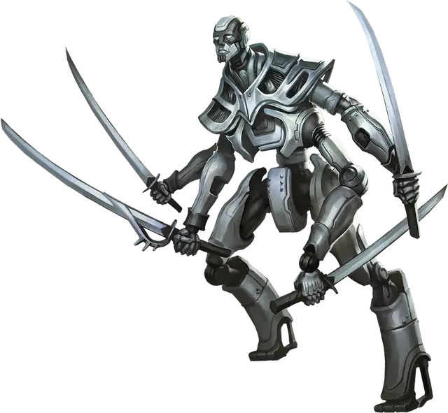

Колярут
Kolyarut
Средний Конструкт (Неизбежный), законно-нейтральный, именной НИП

Класс Доспеха 18 (природный доспех)
Хиты 297 (35к8 + 140)
Скорость 50 футов, летая 35 футов (парит)
| мод | спас | ||
|---|---|---|---|
| СИЛ | 25 | +7 | +7 |
| ЛОВ | 12 | +1 | +1 |
| ТЕЛ | 19 | +4 | +4 |
| мод | спас | ||
|---|---|---|---|
| ИНТ | 25 | +7 | +13 |
| МДР | 22 | +6 | +12 |
| ХАР | 18 | +4 | +10 |
Навыки Восприятие +12, История +13, Проницательность +12
Сопротивление урону звук; немагический дробящий, колющий, рубящий
Иммунитет к урону яд
Иммунитет к состояниям бессознательность, испуг, истощение, отравление, очарование, паралич
Чувства тёмное зрение 60 футов, пассивное Восприятие 22
Языки Все
Опасность 20 (25000 опыта)
Бонус мастерства +6
Особенности
Неизменяемая форма. Колярут обладает невосприимчивостью ко всем заклинаниям и эффектам, изменяющим его форму.
Легендарное сопротивление (4/день). Если колярут проваливает спасбросок, он может вместо этого сделать спасбросок успешным.
Сопротивление магии. Колярут совершает с преимуществом спасброски от заклинаний и прочих магических эффектов.
Действия
Мультиатака. Колярут совершает четыре атаки Безупречным клинком.
Безупречный клинок. . Рукопашная атака оружием: автоматическое попадание, досягаемость 5 футов, одна цель. Попадание: 24 урона силовым полем плюс один из следующих эффектов:
• 1-2: Обезоруживание. Цель роняет один предмет, который она держит, по выбору колярута.
• 3-4: Нарушение баланса. Цель не может использовать реакции до начала следующего хода колярута.
• 5-6: Толчок. Если цель Большого размера или меньше, её отталкивает на расстояние до 15 футов от колярута.
Повеление клинков (перезарядка 5-6). Колярут перемещается на свою скорость, не провоцируя атак, и может совершить одну атаку Безупречным клинком по каждому существу, мимо которого он перемещается. Всякий раз, когда он попадает по существу атакой Безупречным клинком во время этого передвижения, каждое заклинание 5-го уровня или ниже находящееся на существе заканчивается, а существо становится недееспособным до конца следующего хода колярута.
Уход в иной мир (3/день). Колярут накладывает уход в иной мир [plane shift], не нуждаясь в материальных компонентах, используя Интеллект в качестве базовой характеристики. Колярут может наложить это заклинание как обычно или он может наложить заклинание на несогласное существо, которое он видит в 60 футах. Если он использует последний вариант, то цель должна преуспеть в спасброске Харизмы Сл 18, иначе они будут телепортированными в телепортационный круг в Зале Соглашений в Сигиле.
Реакции
Парирование. Колярут добавляет 6 к КД против одной рукопашной атаки, которая должна попасть по нему. Для этого колярут должен видеть атакующего, и должен использовать рукопашное оружие.
Описание
Созданный Праймусом, лидером модронов, Колярут - это удивительная машина, способная заключать обязывающие контракты между сторонами. Из Зала Соглашений в Сигиле Колярут оценивает потребности планарных существ, отыскивая исключительно обязывающие условия, и выковываетт незыблемые соглашения. Тех, кто нарушает эти контракты, преследуют маруты [marut] и жестоко наказывают.
В случаях, когда условия контракта или основополагающая истина соглашения ставятся под сомнение, Колярут отправляет деталь себя на иные планы в поисках истины. Также известные как коляруты, эти проявления великой машины функционируют как исследователи мультивселенной и ищут ответы на конкретные затруднительные вопросы. Как только их вопросы будут удовлетворены, они отчитываются перед своим создателем, позволяя Коляруту выносить точные суждения.
Коляруты - четырехрукие существа, обладающие магией и механизмами. Подобно марутам, они неизбежны, существа, посвятившие себя бесперебойному исполнению законов на всех планах. Коляруты владеют клинками со смертоносной эффективностью, что позволяет им защищаться во время своих вылазок и разрубать любого, кто скрывает истину.
Иногда Зал Соглашений одалживает колярутов законным существам, которые изначально заинтересованы в упорядоченном функционировании мультивселенной, помогая им в поиске ответов планарной важности.